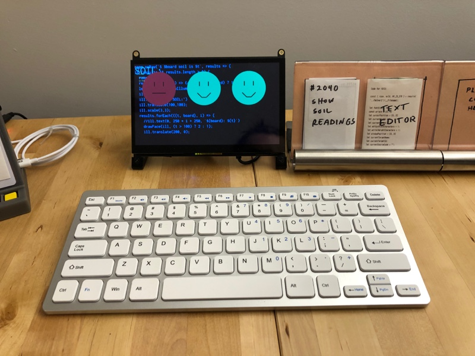

April 24, 2021
I am exploring the idea of "programmable spaces" — where the concept of a computer is expanded outside a little rectangular screen to fill the entire room. Interacting with the programmable space means using physical objects, not virtual ones on a screen. Bringing computing to the scale of a room makes it a communal and social experience.
I want to inspire and empower more people to make and personalize electronic objects in their homes. I made a new way to reprogram electronic boards that is good for multiple people casually making changes to the objects, as opposed to the individualistic making experience today. Boards are reprogrammed by swapping out physical trading card-sized programs. When edits are needed, an integrated text editor is there. Objects are also build from the ground up to be connected to the rest of the room without any setup.
I have used program cards and electronic boards in many of my previous programmable space prototypes, but this is the first time I can integrate microcontrollers into the rest of the programmable space without needing a WiFi connection or having to write a proxy application for each board and functionality I want to support.
Firstly, code is saved and edited on the original maker's personal computer. If someone else wants to see or edit code they have to deal with sharing and permission issues of getting someone else's code to their computer and learning how to edit it. Secondly, electronic devices themselves hide away their source code and capabilities. You may be able to get the current version of the code off a device, but not earlier versions or other demos. Trying to understand what the device does and can do requires you to have almost all the same knowledge as the original maker. If someone else's goal is to just understand, play, or temporarily change a devices's behavior this is a big hurdle. These hurdles can make a fear of messing up the original maker's work and so other people are less likely to try and collaborate on it.
When doing "serious work", it makes sense that programming revolves around a single person's computer, but I think shared spaces would benefit from trading a little bit of original maker efficiency for a more inviting experience for other people sharing the space.
Let's imagine Alice and Bob are living together and they have some plants. Bob keeps forgetting to water the plants so they come up with an idea for a soil moisture sensor that glows red when the soil is dry.
They could just write it down on paper but it would be cooler to make someone themselves that was a little smarter than paper. They could just buy a "smart IoT plant sensor" but then they have to deal with the hassle or another account and phone app when what they want sounds pretty simple.
Alice is the more enthusiatic maker and so they buy a couple soil moisture sensors and a few Circuit Playground Bluefruit boards which supports Bluetooth and can be programmed with CircuitPython. They write some CircuitPython code using the Mu editor on their computer and save different versions and tests to their computer's Desktop as they are working on the first sensor. After the first sensor works, they plug in the second Bluefruit board and program it with the working code they have saved on their Desktop. Alice then has the idea to make a dashboard that shows a smiling or frowning face to represent the status of each plant. They write some hacky code that is good enough to run on their computer.
A few weeks later, Bob buys another plant and wants to add in the same soil sensor and add it to the dashboard Alice set up. Bob is not an experienced maker and so they have no idea where to start or how the other two sensors work today. Alice emails Bob the code file they need to program the new soil sensor their personal computer. With Alice telling Bob what to do other their shoulder, they are able to get the code running on the third sensor. Integrating the third sensor into the dashboard display is more annoying. Alice's code doesn't work on Bob's computer right away and it's easier for Alice to just make the change on their computer.
Alice makes the first soil sensor using the CircuitPython Editor in the room. They plug in the Bluefruit board into the Editor computer and then place a blank "program card" on a stand next to the editor. The code Alice writes is automatically associated with the program card on the stand. After the code is working, Alice adds the printed source code and a little drawing to the program card so that is identifiable. Placing a new program card on the stand automatically copies to the electronic board plugged into the CircuitPlayground Editor so programming the second soil sensor is as easy as plugging in the new board and placing the soil sensor program card on the stand.

Alice makes a new Programmable Space program for the smiley-face dashboard using a different program editor and program card in the room. A CircuitPython library and corresponding proxy allows the Bluefruit to make claims about the soil sensor value to the Programmable Space without writing any Bluetooth code. The dashboard code can subscribe to these claims about soil sensor values to make the smiley-face dashboard live updating and free of Bluetooth-specific code.

When Bob wants to add the third sensor, Alice tells them to just plug in the new board and put the soil sensor card on the stand. Bob sees there are other program cards next to the editor and tries out the one labeled "rainbow" which shows a rainbow light pattern on the board. Bob changes the program code on the stand to the soil sensor card and then is ready to add the sensor to the new plant.
To edit the smiley-face dashboard, Alice shows Bob the program card for the dashboard and the text editor card used to edit the code. This change involves editing some code Bob doesn't really understand, but luckily the change only involved copying a few lines of code out of the 30 lines of code for whole program.

In the first story, Alice (the original maker) was involved in every step of Bob's changes because the code was on their computer and they had to help Bob get the code and run it. The second story involved a simiilar process for the Alice but Bob had an easier time because they had ways to make basic changes without needing to understanding programming the boards on their own computer. When a little programming was needed for the smiley-face dashboard changes, they had a physical reference to keep them grounded. Alice also had an easier time making the dashboard because the programmable space system tool care of the Bluetooth and data sharing part of this multi-device demo.
Program cards are just physical representation of code in a file on some computer. Physical representation is important so you can put the code physically next to the object you want to edit and see the options you have.
In my demo I have program cards containing both a printout of the full source code and a trading-card like front where you can make a drawing and write a short description of what the code does. The drawing makes the physical cards unique and brings a personal element them. The full source code is so someone could read or reference the code without needing to have it open on a computer editor. Each of these are optional but I found that code alone isn't physically different enough to be a good label and that a drawing alone skips over important details of how things actually work.
My editor is compatible with any of the 200+ electronic boards that can run CircuitPython. CircuitPython is great because Python is approachable and boards can be programmed without compilation or installed drivers. They come in varying sizes, speeds, and some have Bluetooth. Personally I have played with the CircuitPlayground Bluefruit, Raspberry Pi Pico, Adafruit CLUE, Adafruit Feather nRF52840, and the Trinket M0. Some boards come with built in sensors or outputs, but for many applications additional wiring and components are needed. There are many great kits that make doing a lot of cool things like controlling motors easier, but some projects are challenging and improving that side of the making experience is outside the scope of this project.

Program cards are put on a stand that consists of an RFID sensor, some buttons, and an electronic board that tells the computer the ID of cards via USB. The stand uses a CircuitPython board that was programmed using the same editor it is part of and I think that is cool. One button causes the front of the program card to be printed and another prints the full source code.

When creating something new or making edits more than just swapping a card, a text editor is used. I have a custom text editor so it could better integrate with the program stand, the board, and the code printer.
There is no "open file" action because source code is open when a board is plugged in or when a new card is put on the stand. The editor communicates with the programmable space system to get program source code and make claims wishing code would be printed. There is also a built in serial monitor because that is the use of debugging code and build errors. The editor and the computer running the editor are meant to be always-on to lower the activation energy for making something.
I originally wanted to make a custom full-screen text editor to have more control of the aesthetics and to change the perception of what the device was (i.e., not a traditional computer). I decided against this because the code editing experience is so much more than just a text editor: copying resource files to the board, reading tutorials online, and editing images and audio to be used on the board.
A thermal printer is connected to a Raspberry Pi that runs a program that listens for wishes to print things from the programmable space. I used a big thermal printer to get wider line widths and more readable source code.
It is fun to make individual electronic boards do things, but it is a whole next level of cool ideas you can do when the boards can easily communicate with other objects in the room. These other object could be other boards or full graphic programs. I wanted the integration to no require any first time setup (aka typing in WiFi credentials to the board) or require an external internet connection so privacy is less of a concern. A natural fit for this is Bluetooth Low Energy (BLE) which can be found in many electronic boards today and it commonly supported by phones and computers.
On the same computer as the editor, there is a background program that automatically connects to any CircuitPython BLE and proxies messages to the rest of the programmable space system. I wrote a CircuitPython library that allows you to write code like `room.claim(`temp is ' + myTemp)` which will serialize that message over BLE and then claimed to the programmable space fact table by the proxy. Similarly objects can listen for changes to the programmable space fact fact.
The first kind of object that I want to help more people make is displays of information that use peripheral or background senses so the are calming and not exhausting like looking at a screen in your foreground. I find the ideas of tangible bits paper and Weisner's "calm technology" ideas inspiring and the goal of the CircuitPython editor is and programmble space is to make it as easy to make a display for the periphery as it is to show something on a computer screen.

In this "Dangling String" demo (inspired by Natalie Jeremijenko's work of the same name) uses a Trinket M0 board wired to a motor with a blue ribbon attached to it. The Trinket M0 was programmed using the CircuitPython editor to twirl the ribbon every 5 minutes as a calm and subtle way to notice the passage of time.
The second type of objects that I want to help more people make is personal objects: things that use art and samples from people you know to make the objects special to the people in the space. In this demo some handmade ceramic blobs sing using recorded voices of my family.
Finally, I want to help more people make objects that can be integrate with the rest of the devices in the room. The earlier plant soil sensor showed sensors claiming facts to the programmable space but in this demo the Circuit Playground Bluefruit board subscribes to the fact "time is $X" in the room and displays it on the lights on the board. Behind it, there is another programmable space program that also subscribes to the same fact and displays the time as text on a screen. I think people have tunnel vision that screens are the only way to display information and I hope my making it easy to integrate electronic boards to a space that people will begin to thinking bigger.
I think it's also useful to compare this to products like Adafruit.IO that claim to help people make connected devices. These services require Internet connectivity, creating accounts, sharing data with third parties, and sometimes paying money so I feel a better solution would be local to the devices. Although Internet connectivity is common, in my experience WiFi signals are too spotty for these small electronic boards to work in every room of the home and I have wasted far too much time trying to update and program WiFi credentials into every device where I got fed up with it. In project and programmable spaces intentionally uses Bluetooth and local network connections so that no Internet connection is required.
If you have thoughts or questions, feel free to email or reach out to me on Twitter.